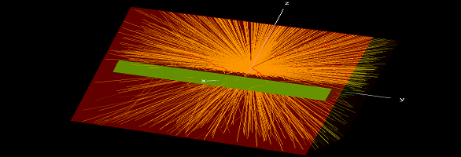

EGSnrc Monte-Carlo simulations
EGSnrc is a software toolkit used to perform Monte Carlo simulation of ionizing radiation transport through matter. It models the propagation of photons, electrons and positrons with kinetic energies between 1 keV and 10 GeV, in homogeneous materials.
There are two distinct ways that the EGSnrc toolkit can be install in a personal computer. One way is to install it directly on a personal computer. The other way is to install it inside a Linux virtual machine running on a personal computer. I recommend taking the second approach of installing the toolkit inside a Linux virtual machine. This approach is a fail-safe way to install the toolkit without worrying about installing other applications that are required to successfully run the toolkit. Howerevr this approach incurs computing performance penalty and requires at least 10 GB of disk space.
The EGSnrc toolkit does not require a steep learning curve to use it successfully. Reading the "getting-started" document and doing all the examples in the document is enough to familiarise yourself with how the toolkit works. The toolkit requires the user to input code for the geometry to be simulated, the medium of the geometry, the beam source, the number of histories to simulate and a dose scoring object.
This toolkit is great for modelling radiation dose deposited to a region of interest by either a photon beam or electron beam. It can be used to calculate the dose deposited to a region of interest, ionization chamber correction factors and stopping powers.
The toolkit requires a few lines of code which makes it easy to use, but this causes the toolkit to have limited capabilities. The toolkit can not simulate different radiation field sizes irradiated oh the geometry. This makes it very difficult if not impossible to simulate beam output factors and tissue-phantom ratios.